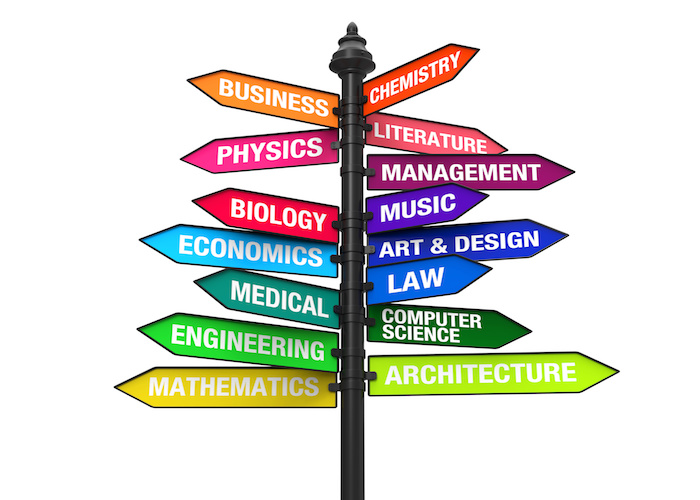

In this project I used R for exploratory data analysis, machine learning such as building a classification model and a linear regression model, as well as data preprocessing and data visualization.
Click "View Repository" to view my github repository for this project. You will see the 6 projects that make up this R data science project.

In this project I used Python for data visualization. I used libraries such as matplotlib, plotly, numpy, and pandas. I created a dice rolling simulator and created a bar graph, using plotly express, to show the frequencies of each possible roll.
I also analyzed earthquake, wildfire, and temperature data. I created time series graphs to show the temperature over time in two different locations, as well as maps showing earthquake and wildfire locations and sizes.
In this project I created an alien invasion game, similar to Space Invaders, using pygame. I created a spaceship that shoots bullets at alien spaceships. After defeating all aliens, the level increases and aliens speed up.
I also created an AI bot that plays Space Invaders. I used Proximal Policy Optimization (PPO) which is a reinforcement learning algorithm.


In this project I used MySQL to clean and analyze data of layoffs from March 2020 to March 2023. I also used Tableau to create presentations.
Click on the images to see Tableau dashboards or click on "View MySQL Code".

I completed the Titanic machine learning kaggle. I cleaned the data by removing null values and performing feature engineering, and visualized the data by creating histograms. I created a machine learning model to predict if passengers on the Titanic survived the crash.
I completed the spaceship machine learning kaggle. I cleaned the data by removing null values and performing feature engineering, and visualized the data by creating histograms. I created a machine learning model to predict if people were abducted by aliens.
In this project, which I completed for my Econometrics class at Quinnipiac, I researched factors that affect gun violence rates. I determined stand your ground laws, income, education, unemployment, divorce rate, and race all affect gun violence rates. Tests were conducted to detect if heteroscedasticity, multicollinearity, and serial correlation were present.

This paper explains machine learning topics such as perceptrons and neural networks as well as the importance of mathematics including linear algebra and vectors.
Click on image to see presentation or click on "Read Paper".

In this project I used Jupyter notebook and libraries such as pandas, seaborn, numpy, and matplotlib to clean and analyze movie data. I studied correlation and determined that a movie's budget and it's gross revenue are highly correlated.

In this project I used R to analyze health data. I determined that the variables that have the greatest impact on health charges are age, BMI, if the person has children, and if they are a smoker.
Click on the image to see graphs or click on "View R Code".
In this project I used R to analyze data science salaries by state. I cleaned and manipulated the data, as well as created visualizations.
Click the image to view graphs or click "View R Code".

In this project I used R to analyze salaries of different college majors. I manipulated and analyzed the data, as well as created visualizations.
Click the image to view visualizations or click "View R Code".

In this project I completed beginner level projects in Python such as a quiz game, madlibs, a number guessing game, and a timed math challenge. These projects include if statements, getting input from users, as well as while and for loops.